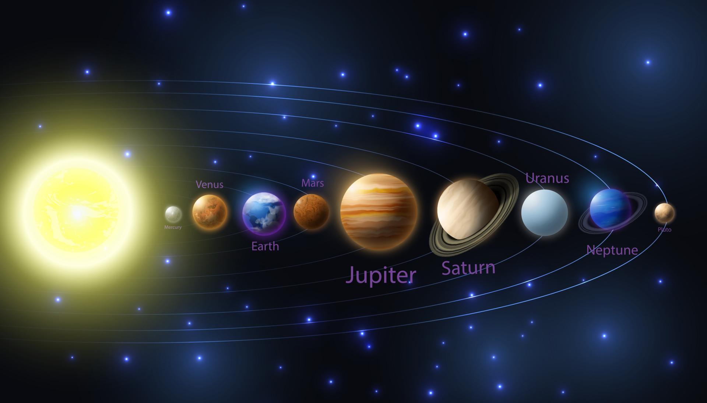
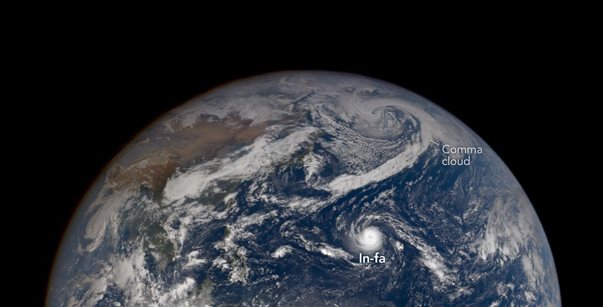

Nuestro Sistema Solar

¿Qué es el Sistema Solar?
El Sistema Solar es el conjunto formado por el Sol y todos los cuerpos celestes que están bajo su influencia gravitatoria. Entre ellos encontramos ocho planetas, planetas enanos, satélites naturales, asteroides y cometas.
Todos estos cuerpos se mantienen relacionados gracias a la gravedad. El Sistema Solar se encuentra en la galaxia conocida como Vía Láctea y tiene una antigüedad aproximada de 4.600 millones de años.
El Sol: nuestra estrella
El Sol es la estrella situada en el centro del Sistema Solar. Está compuesto principalmente por hidrógeno y helio, y produce energía mediante un proceso llamado fusión nuclear.
Su luz y calor son fundamentales para la vida en la Tierra. Además, su enorme fuerza gravitatoria mantiene a los planetas y otros cuerpos celestes en sus respectivas órbitas.

Los ocho planetas
Los planetas son cuerpos celestes que orbitan alrededor del Sol. Cada uno tiene características particulares relacionadas con su tamaño, composición, temperatura y movimiento.
- Mercurio: es el planeta más cercano al Sol y también el más pequeño del Sistema Solar.
- Venus: es el planeta más caliente debido a su atmósfera densa, que retiene gran cantidad de calor.
- Tierra: es nuestro hogar y el único planeta donde conocemos la existencia de vida.
- Marte: es conocido como el planeta rojo por el óxido de hierro presente en su superficie.
- Júpiter: es el planeta más grande y tiene una enorme tormenta conocida como la Gran Mancha Roja.
- Saturno: destaca por su impresionante sistema de anillos, formado principalmente por hielo y roca.
- Urano: es un gigante helado que gira con una inclinación muy pronunciada, como si estuviera acostado.
- Neptuno: es el planeta más alejado del Sol y presenta algunos de los vientos más rápidos del Sistema Solar.
Planetas interiores y exteriores
Los ocho planetas del Sistema Solar se clasifican en dos grandes grupos según su composición y ubicación: interiores y exteriores.
Planetas interiores
Son los cuatro planetas más cercanos al Sol: Mercurio, Venus, Tierra y Marte. Se caracterizan por tener superficies rocosas, ser relativamente pequeños y presentar una estructura sólida.
Planetas exteriores
Se encuentran después del cinturón de asteroides y son mucho más grandes que los interiores. Se dividen en gigantes gaseosos, como Júpiter y Saturno, y gigantes helados, como Urano y Neptuno.
Otros cuerpos celestes del Sistema Solar
Además del Sol y los ocho planetas, el Sistema Solar está compuesto por numerosos cuerpos celestes que también forman parte de su estructura. Algunos son pequeños, mientras que otros pueden alcanzar dimensiones considerables.
Satélites naturales
Son cuerpos celestes que giran alrededor de los planetas o de otros cuerpos mayores. La Luna es el satélite natural de la Tierra. Otros planetas también poseen lunas; por ejemplo, Júpiter tiene numerosas lunas, entre ellas Europa, Ío, Ganímedes y Calisto.
Asteroides
Son cuerpos rocosos o metálicos que orbitan alrededor del Sol. La mayoría de los asteroides conocidos se encuentra en el cinturón de asteroides, una región situada entre las órbitas de Marte y Júpiter.
Cometas
Son cuerpos celestes compuestos principalmente por hielo, polvo y materiales rocosos. Cuando se acercan al Sol, parte de sus materiales se calienta y libera gas y polvo, formando una nube alrededor del cometa y, en ocasiones, una cola brillante que puede extenderse por el espacio.
Meteoroides, meteoros y meteoritos
Aunque sus nombres son parecidos, estos tres términos representan fenómenos diferentes:
- Meteoroide: es un pequeño fragmento de roca o metal que se encuentra en el espacio.
- Meteoro: es el fenómeno luminoso que se produce cuando un meteoroide entra en la atmósfera terrestre.
- Meteorito: es el fragmento que consigue atravesar la atmósfera y llegar a la superficie de la Tierra.
Los planetas enanos
Los planetas enanos son cuerpos celestes que orbitan alrededor del Sol y tienen suficiente gravedad para adquirir una forma aproximadamente esférica. Sin embargo, no han despejado su órbita de otros objetos.
Actualmente, la Unión Astronómica Internacional reconoce cinco planetas enanos principales:
- Ceres: se encuentra en el cinturón de asteroides, entre Marte y Júpiter.
- Plutón: está ubicado en el cinturón de Kuiper, más allá de Neptuno. Fue considerado el noveno planeta hasta el año 2006.
- Haumea: se encuentra en el cinturón de Kuiper y tiene una forma alargada debido a su rápida rotación.
- Makemake: es un planeta enano situado en una región distante del Sistema Solar.
- Eris: es un cuerpo celeste muy lejano y de tamaño similar al de Plutón.
Las regiones del Sistema Solar
El Sistema Solar no está formado únicamente por planetas. También contiene regiones donde se concentran diferentes tipos de cuerpos celestes.
Cinturón de asteroides
Es una región ubicada entre Marte y Júpiter donde se encuentra una gran cantidad de asteroides que orbitan alrededor del Sol. Aunque contiene millones de objetos, las distancias entre ellos suelen ser enormes.
Cinturón de Kuiper
Es una región situada más allá de la órbita de Neptuno. Contiene numerosos cuerpos helados y planetas enanos, entre ellos Plutón. Es una zona importante para estudiar los materiales que quedaron de la formación del Sistema Solar.
Nube de Oort
Es una región muy distante que, según los modelos científicos, rodearía al Sistema Solar. Se cree que contiene una enorme cantidad de objetos helados y que podría ser el origen de muchos cometas de período largo. Su existencia se plantea a partir de evidencias indirectas.
La exploración del Sistema Solar
Desde hace décadas, los seres humanos han desarrollado diferentes tecnologías para estudiar los planetas y otros cuerpos celestes. Gracias a las misiones espaciales, hemos obtenido imágenes, mediciones y descubrimientos que han permitido comprender mejor nuestro entorno cósmico.
- Voyager 1 y Voyager 2: fueron lanzadas en 1977 y estudiaron los planetas exteriores. Ambas continúan su viaje por el espacio interestelar.
- Mariner 10: fue una de las primeras misiones en estudiar de cerca el planeta Mercurio.
- Cassini-Huygens: exploró Saturno, sus anillos y algunas de sus lunas durante varios años.
- New Horizons: realizó un histórico acercamiento a Plutón en 2015 y permitió conocer mejor este planeta enano.
- Perseverance: es un vehículo robótico que explora Marte y estudia sus características geológicas en busca de indicios de antiguas condiciones habitables.
La exploración espacial continúa avanzando y cada misión permite descubrir nuevos detalles sobre los cuerpos que forman nuestro Sistema Solar.
Curiosidades del Sistema Solar
El espacio está lleno de características sorprendentes. Estos son algunos datos interesantes que quizás no conocías:
- La luz del Sol: tarda aproximadamente 8 minutos y 20 segundos en llegar a la Tierra.
- El planeta más grande: Júpiter es tan grande que podrían caber más de 1.300 planetas del tamaño de la Tierra en su volumen.
- Un día diferente: Venus tarda más tiempo en completar una rotación sobre su eje que en dar una vuelta alrededor del Sol.
- El volcán gigante: Marte alberga el Monte Olimpo, el volcán más grande conocido del Sistema Solar.
- Los anillos de Saturno: están formados principalmente por fragmentos de hielo, polvo y roca.
- La inclinación de Urano: su eje de rotación está inclinado aproximadamente 98 grados, por lo que parece girar de lado.
- El frío de Neptuno: debido a su gran distancia del Sol, recibe muy poca energía solar.